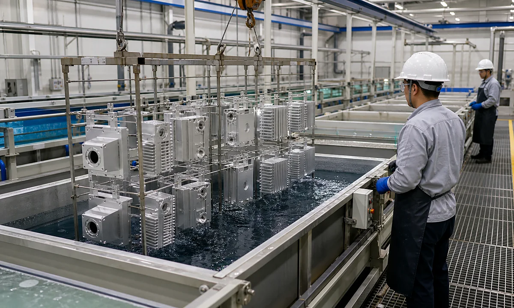
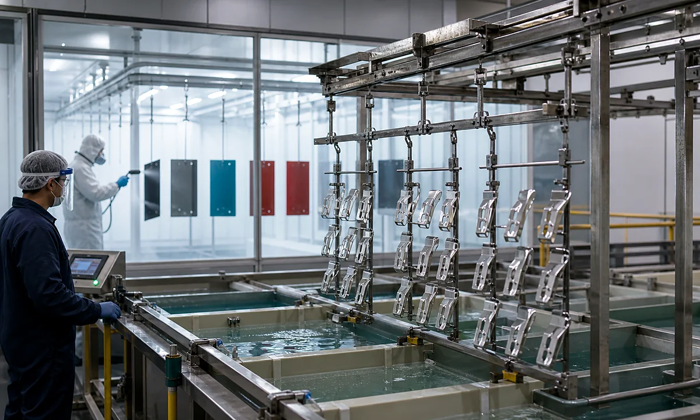
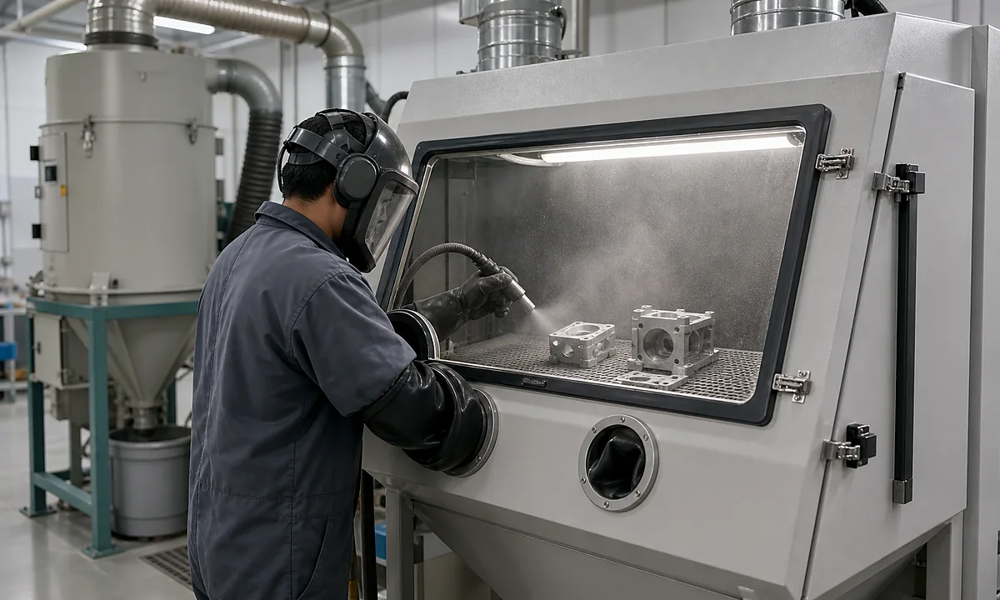
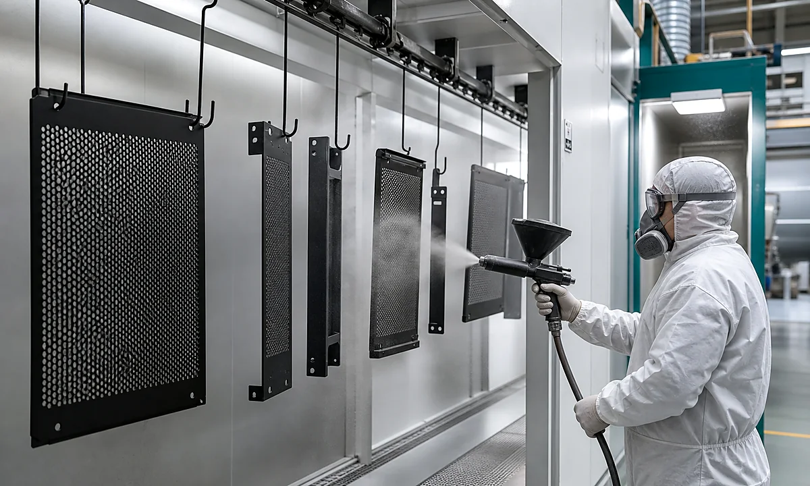
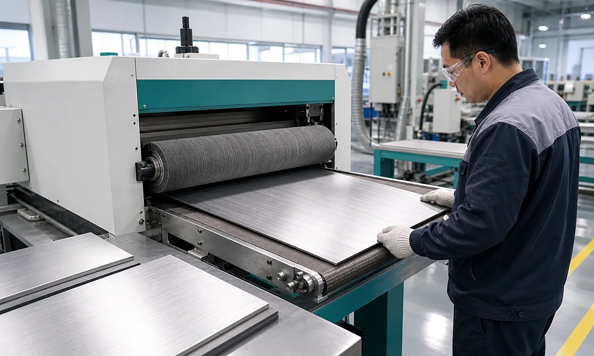
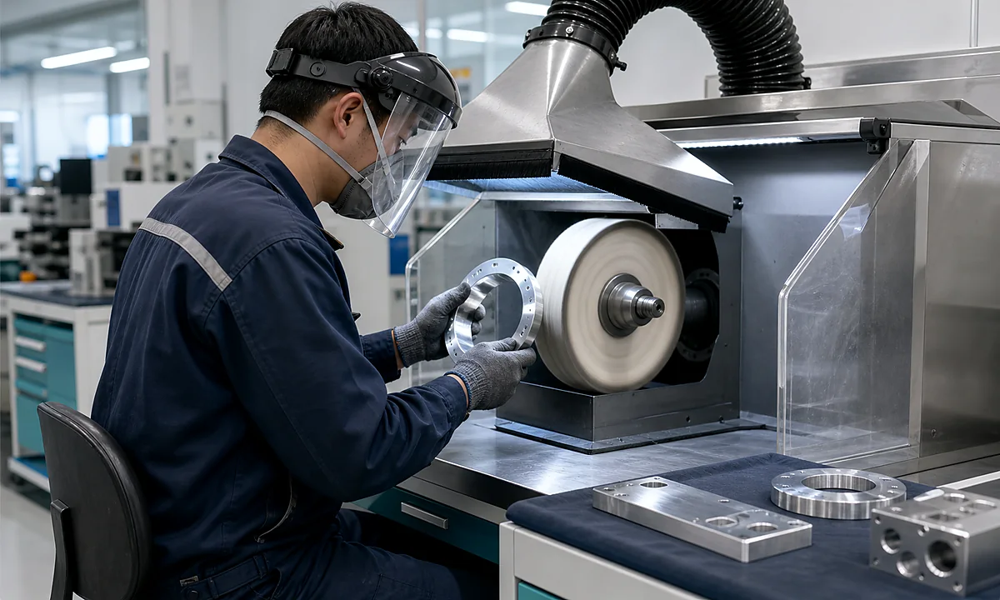

Aluminum
Anodizing
Protective oxide layer with clear, black, or custom colors for machined aluminum parts.
Type II, hard anodizing
Surface Treatment
Choose finishes for corrosion resistance, color, texture, conductivity, wear protection, and product appearance. We review finish feasibility together with material and tolerance requirements.
Finish Options

Protective oxide layer with clear, black, or custom colors for machined aluminum parts.
Type II, hard anodizing
Uniform matte texture that reduces machining marks and prepares parts for anodizing.
Satin appearance
Durable colored coating for enclosures, panels, brackets, cabinets, and welded parts.
RAL colors available
Directional grain for stainless steel, aluminum panels, covers, and visible metal parts.
Linear finish
Improves brightness and smoothness for decorative, sealing, or appearance surfaces.
Mirror or semi-polishColor, corrosion resistance, conductivity, or wear protection depending on project needs.
Zinc, nickel, paintFinish Notes
Audio Component Guide
Finish selection should follow the base material, exposure, appearance zone, electrical function, tolerance allowance, and expected handling during touring or installation.

Specify color, gloss, edge coverage, perforation openness, and foam or mesh bonding after coating.

Review corrosion exposure, hole wear, grounding, mating pins, masking, and the inspection evidence required by the project.

Keep thermal interfaces, threaded holes, flatness zones, and electrical contact areas clear in the finish specification.

Define texture direction, color range, engraving contrast, touch surfaces, and an approved cosmetic limit sample.
Finish Engineering
Coating thickness, masking, texture direction, color range, corrosion exposure, electrical contact, and packaging can all affect the drawing and production route.
Include finishing in the design review